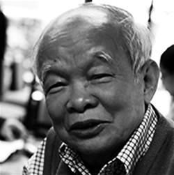
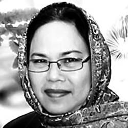

Suy cho cùng thì vấn đề của xã hội Việt Nam bây giờ chính là vấn đề nhân cách...
☆
Loài người từ khi sinh ra đã có thói quen nói điều mình nghĩ. Nhưng có lẽ chưa bao giờ nói dối trở thành bình thường như bây giờ.
Qua các bài phỏng vấn của các báo, với các câu hỏi sắc sảo của phóng viên, chúng ta có thể hiểu đạo diễn Trần Văn Thủy nghĩ gì, quan niệm thế nào về chuyện làm nghề.
Xin trích một số bài phỏng vấn đã đăng trên các báo.
* NHỜ KHÁN GIẢ MÀ TÔI TỒN TẠI
Phỏng vấn đạo diễn NSND Trần Văn Thủy:
Thứ Ba 24, Tháng Năm 2011, bởi SV
Trao đổi với chúng tôi, tác giả của những bộ phim tài liệu đầy tinh thần vì sự thật cho biết ông chỉ thích làm phim tài liệu vì thể loại này phản ánh cuộc sống một cách trung thực, không hư cấu, không đóng diễn, không bịa đặt.
Thưa ông, từ những bộ phim tài liệu đầu tiên, ông tỏ ra “nặng lòng” với chiến tranh. Ông thường tiếp cận vấn đề này như thế nào?
Trong những phim tôi làm thì hình như chỉ có 3, 4 phim liên quan đến đề tài chiến tranh: “Những Người Dân Quê Tôi”, “Phản Bội”, “Chuyện Từ Góc Công Viên” và “Tiếng Vĩ Cầm Ở Mỹ Lai”. Những “cái được” của chiến tranh, mấy thập kỷ qua đã nói quá nhiều. Theo tôi, có lẽ đã đến lúc cần phải tính đến một cách thành thực nhất những mất mát do chiến tranh. Điều đó rất cần và có ích cho tương lai lâu dài của người Việt Nam.
Phim tài liệu có vai trò rất lớn trong việc phản ánh đời sống xã hội, nhưng hiện nay vẫn ít được các nhà làm phim trẻ quan tâm. Ông có điều gì muốn chia sẻ với họ?
Tôi xin nói ngay rằng làm một bộ phim tài liệu đích thực, có ích, gây được “dư chấn” trong đời sống tinh thần của xã hội là chuyện hoàn toàn không dễ dàng, nhất là ở Việt Nam. Có lẽ bởi vậy, trên thế giới số lượng phim tài liệu làm ra hằng năm có tới hàng nghìn hay nhiều hơn thế, nhưng những đạo diễn phim tài liệu nổi tiếng thế giới cũng chỉ đếm trên đầu ngón tay.
Phim tài liệu là một loại phim “dễ làm mà khó hay”. Tôi chọn làm phim tài liệu bởi nó gần với cuộc sống mà tôi đang quan tâm. Không hư cấu. Không đóng diễn. Không bịa đặt. Theo tôi, lựa chọn thế nào là tùy ở sở thích và khả năng của mỗi người. Tôi không khuyên các đạo diễn trẻ làm phim tài liệu. Tôi nhớ, cách đây quãng 25 năm, đạo diễn người Pháp gốc Việt Trần Anh Hùng khi về nước giới thiệu “Mùi Đu Đủ Xanh” đã nói với tôi: “ Khi tới 52 tuổi, Hùng sẽ làm phim tài liệu ”.
Ông đã có nhiều buổi chiếu phim và thuyết trình ở nhiều nước trên thế giới. Khán giả nước ngoài có phản ứng sao đối với phim của ông?
Tôi có hơn 100 buổi chiếu tại các viện đại học danh tiếng, các hội thảo điện ảnh, xã hội và chính trị, ở Đức, Pháp, Ý, Anh, Bỉ, Nhật, Australia và nhiều nhất là ở Mỹ. Tôi có thêm nhiều bạn bè qua những chuyến đi ấy. Nên nhớ rằng họ có dân trí cao và tư duy độc lập, nhưng họ đã đón tiếp tôi rất chân tình, quý mến. Tôi cho là họ đã hiểu sâu về Việt Nam hơn.
Ông muốn tâm sự điều gì với khán giả?
Tôi tự đáy lòng biết ơn sâu sắc khán giả. Nhờ có các bạn mà tôi tồn tại. Đã đôi lần tôi trả lời với báo giới trong và ngoài nước rằng: điều ám ảnh lớn nhất trong tôi khi tôi có ý tưởng làm phim, chọn đề tài, vững tin vào những điều mình theo đuổi, vượt qua những vùng cấm là do người xem. Quả thật vậy, khi quyết định một cảnh quay “mạo hiểm”, viết một lời bình “gai góc”, cho phim “vượt biên” đến Liên hoan phim quốc tế..., tôi chỉ nghĩ đến người xem.
Xin cảm ơn ông!
(Theo TinTucOnline)
* SAU HƠN 20 NĂM, CHUYỆN TỬ TẾ TỚI VIENNALE 2008
Thưa đạo diễn, được biết đạo bộ phim “Chuyện Tử Tế” của ông vừa được trình chiếu tại Liên hoan phim Viennale (Áo)?
Vâng. “Chuyện Tử Tế” được trình chiếu tại Liên hoan phim Viennale (Áo) vào ngày 25/10 vừa rồi. Theo BTC, đây là Liên hoan phim quốc tế lớn nhất và lâu đời nhất của Áo được tổ chức 2 năm 1 lần. Liên hoan phim không tranh giải, chương trình bao gồm khoảng 120 phim truyện và phim tài liệu dài, và khoảng 50 phim ngắn từ khắp nơi trên thế giới. Các phim được Liên hoan phim chú ý là những bộ phim mang tính nghệ thuật và chính trị.
Liên hoan phim Viennale chỉ trình chiếu những phim được sản xuất 2 năm gần đây, trong khi “Chuyện Tử Tế” đã ra đời cách đây hơn 20 năm?
Vâng, đây cũng là câu hỏi mà tôi băn khoăn khi nhận được lời mời. “Chuyện Tử Tế” khởi quay cách đây 23 năm và ra đời cách đây 21 năm (1987). Tôi đã email cho ban tổ chức và nhận được câu trả lời cụ thể. Liên hoan phim Viennale trình chiếu những phim được sản xuất trong năm 2007 – 2008, nhưng bên cạnh đó, mỗi kỳ Liên hoan phim còn vinh danh một số cá nhân đặc biệt cùng những chương trình về lịch sử điện ảnh. “Chuyện Tử Tế” được trình chiếu trong mục này.
Do đâu Liên hoan phim này biết tới “Chuyện Tử Tế” và họ đánh giá như thế nào về tác phẩm này?
Bà Verena, Ban Tổ chức Liên hoan phim đã email cho tôi rằng, “Chuyện Tử Tế” được chọn bởi một đạo diễn người Mỹ - ông John Gianvito (đạo diễn phim The Mad Songs of Fernanda Hussein, Profit Motive and the Whispering Wind), người chịu trách nhiệm một số chương trình của Liên hoan phim. Chương trình này bao gồm các phim: “Chuyện Tử Tế” (Trần Văn Thủy, 1987), Time of the Locust (Peter Gessner, Mỹ, 1966), Interviews with My Lai Veterans (Joseph Strick, Mỹ, 1970) và SayKomSay (Robert Kramer, Pháp, 1998). Chương trình này có tên là Lessons and lesions: Vietnam. Bà Verena cũng nói rằng họ mong muốn được biết nhiều hơn về Việt Nam, nền Điện ảnh Việt Nam để có được những cái nhìn mới so với quan điểm dập khuôn trước đây. Tôi cũng nhận được thư của John Gianvito. Chúng tôi đã từng quen nhau tại Hội thảo phim Robert Flaherty vào năm 2003 tại New York. John nói rằng, sở dĩ ông chọn “Chuyện Tử Tế” để trình chiếu ở Liên hoan phim Viennale vì nó “nổi tiếng và rất hợp thời cuộc”.
Liên hoan phim quốc tế chắc hẳn sẽ đòi hỏi một bản phim đảm bảo chất lượng, “Chuyện Tử Tế” có gặp khó khăn gì không?
Liên hoan phim đã tìm kiếm mọi nơi để có bản 35mm tốt nhất. Họ liên lạc với Nhật, nơi từng chiếu “Chuyện Tử Tế” năm 1989 trong khuôn khổ khai mạc Liên hoan phim tài liệu Yamagata lần thứ nhất (Yamagata International Documentary Film Festival). Bản phim là bản 35mm được bảo quản rất tốt nhưng lại phụ đề tiếng Nhật. Họ lại liên lạc với Pháp, nơi từng mua bản quyền chiếu bản phim nhựa trong khuôn khổ Liên hoan phim Cinéma du Réel nhưng bản này phụ đề tiếng Pháp. Họ tìm cả ở Đức, bộ phim được Liên hoan phim Leipzig chiếu và trao giải Bồ Câu Bạc năm 1988 nhưng cũng không được, các bản của các đài Channel 4 (Anh), SBS (Úc) phụ đề tiếng Anh nhưng lại không phải phim nhựa. Họ liên lạc với tôi để tìm bản gốc ở Việt Nam, nhưng bản gốc hiện giờ đã bị hỏng và thủ tục để xin được bản này sẽ rất phức tạp. Tôi cũng hỏi rằng, có nhất thiết phải chiếu bản 35mm hay không thì nhận được trả lời là họ luôn cố gắng trình chiếu bộ phim như khi nó được sản xuất, cũng là để thể hiện sự tôn trọng với bộ phim cùng các yếu tố âm thanh, hình ảnh... Họ cũng rất quan tâm đến việc phục hồi phim thông qua việc giữ gìn các bản phim tại các viện phim châu Âu.
Cảm xúc của ông khi “Chuyện Tử Tế” được nhớ tới?
Một bộ phim đã ra đời từ rất lâu mà vẫn được người ta mất công để tìm xem như vậy là một niềm vui đối với chúng tôi. “Chuyện Tử Tế” cũng là một bộ phim đặc biệt trong cuộc đời làm phim tài liệu của tôi. Đây là bộ phim khác thường từ khi ra đời và cũng có rất nhiều kỳ bí quanh cuộc sống của nó. Tôi cũng rất nhớ tới các đồng nghiệp của tôi: Hồ Trí Phổ, Lê Văn Long, Đỗ Duy Hùng, Mai Trung Kiên, Lê Huy Hòa, Phan Minh Hương... đã cùng tôi vượt mọi gian nan để thực hiện bộ phim này. Để nó được đến bờ đến bến.
Thúy Phương thực hiện. 25-11-2008
Bách khoa toàn thư mở Wikipedia
Trần Văn Thủy
Hãy bền bỉ đánh thức sự tử tế
SGTT - Nếu ai đã từng xem “Hà Nội Trong Mắt Ai”, “Chuyện Tử Tế”, và mới đây nhất là “Mạn Đàm Về Người Man Di Hiện Đại”, sẽ hiểu Trần Văn Thủy bị ám ảnh như thế nào với từng số phận con người, với đời sống thực của những người cùng khổ, với những giá trị thực đang dần mất đi... Trong ánh chiều le lói, trước bàn thờ tổ tiên, anh kể về nỗi gian truân sau mỗi thước phim, nghe ly kỳ như chuyện cổ tích...
Điều gì đã ám ảnh anh khi chọn học giả Nguyễn Văn Vĩnh, chủ bút đầu tiên của báo chữ Quốc ngữ ở Bắc kỳ, một dịch giả xuất sắc, một nhà văn hóa mang nặng tinh thần dân tộc là nhân vật chính của “Mạn Đàm Về Người Man Di Hiện Đại”?
Đầu tiên nên nói rõ ràng rằng ý tưởng và khởi xướng việc làm bộ phim này là của gia tộc cụ Nguyễn Văn Vĩnh, mà cụ thể là anh Nguyễn Lân Bình, cháu nội cụ, người lo toan mọi bề, tôi chỉ là một trong những người thực hiện. Thứ nữa là bản thân tôi luôn bị ám ảnh một điều: chúng ta phải nhận thức lại những giá trị đích thực của dân tộc, nếu không sẽ rất có lỗi với tiền nhân. Tôi nghĩ một dân tộc lớn phải có một nền văn hóa xứng đáng với những danh nhân văn hóa lớn.
Các cụ ngày xưa giỏi lắm, chuyện xưa còn biết bao điều chúng ta phải học. Đụng đến Nguyễn Văn Vĩnh và những người cùng thế hệ với cụ ở cuối thế kỷ 19 đầu thế kỷ 20 ấy, là đụng đến một vấn đề lịch sử rất trọng đại, để thấy được tấm lòng của những người yêu nước, nhưng nhiều người trong thế hệ ấy đã bị hiểu sai, bị xuyên tạc và bôi nhọ. Đọc lại những tài liệu xưa cũ trong và ngoài nước, sang Pháp tìm lại hồ sơ lưu trữ các nước thuộc địa Pháp, hồ sơ của các sử gia, nhà nghiên cứu, chúng tôi thật sự choáng váng. Cuộc đời đầy nghịch cảnh của cụ Nguyễn Văn Vĩnh làm tôi bị ám ảnh. Là người rất tâm huyết với sự thịnh suy của đất nước, là một nhân vật thần đồng, kiệt xuất trên mọi phương diện, vậy mà liên tục trong nhiều thập kỷ, ông đã từng bị cho là tay sai, bồi bút, phản động, liên lụy đến mấy đời con cháu sau này. Tôi thường tâm niệm đất nước ta có không biết cơ man những người có tấm lòng ái quốc, hãy vì hậu thế mà đối xử tử tế với họ, cho dù họ ái quốc theo cái cách của họ. Giáo sư Phan Huy Lê, Chủ tịch Hội Khoa học lịch sử Việt Nam đã nói trong phim: “Đánh giá về Nguyễn Văn Vĩnh mà chỉ dừng lại ở việc cụ là thủy tổ của làng báo tiếng Việt, là người có công phát triển chữ Quốc ngữ và là nhà dịch thuật xuất sắc thì chưa đầy đủ và chưa thỏa đáng. Điều xứng đáng hơn, phải nói rằng đóng góp lớn nhất của cụ chính là về tư tưởng. Đó là một trong những nhà tư tưởng dân chủ đầu tiên của Việt Nam mang tính khai sáng”.
Gần bốn giờ với bốn tập phim tài liệu, người xem vẫn chăm chú từ đầu tới cuối, và không khỏi bàng hoàng khi hình ảnh cuối cùng chấm dứt. Bí quyết nào giúp anh tạo nên sự hấp dẫn của bộ phim?
Tôi thường tâm sự với các đồng nghiệp trẻ rằng tiêu chí của phim tài liệu không chỉ là đúng và đủ. Đúng và đủ là tiêu chí của nghị quyết, của các công trình nghiên cứu khoa học. Hấp dẫn là tiêu chí đầu tiên của tôi. Phim tài liệu muốn hấp dẫn, phải đánh động vào thần kinh của xã hội đương đại, khiến người xem tự soi lại mình, rằng ta đang sống như thế nào, ta phải làm gì để có thể sống tốt hơn, lương thiện hơn, tử tế hơn. Trong một xã hội tưởng đầy ắp những dạy bảo, những răn đe, con người vẫn khao khát về lẽ sống, về lẽ phải, chuyện trị nước, yên dân, chuyện hòa hợp hòa giải, chuyện tôn trọng sự khác biệt... Toàn là chuyện “nóng” cả, đâu phải tìm kiếm xa xôi gì tận bên Mỹ, bên Tàu? Làm phim tài liệu không phải để nói bằng được những điều mình nghĩ, mà phải nói được những bức xúc của số đông, đụng chạm đến điều gì sâu thẳm của nỗi đau thân phận con người, khiến người ta suy nghĩ. Đó là một giải mã, một chìa khóa mở ra lối đi cho riêng tôi.
Có một nghịch lý đang diễn ra: sự giàu có về vật chất đang hủy hoại mối quan hệ giữa con người, anh nghĩ gì về điều này?
Năm 1992, khi làm phim “Có Một Làng Quê” với đài truyền hình NHK, mô tả đời sống tinh thần thanh bạch, ấm cúng, đầy tình làng nghĩa xóm của một làng quê nghèo Việt Nam sống bằng nghề đào đất nặn thành chum vại, tiểu sành, tôi cứ thắc mắc tại sao người Nhật lại bỏ tiền cho tôi thực hiện bộ phim nói về “cái tôi”, về một làng nghèo như thế, lại còn cho tôi thuê cả trực thăng để quay. Khi cùng xem phim ở Tokyo, những người Nhật Bản đã nói rằng: “Đây là chuyện cổ tích đời nay!” Lúc ấy tôi mới hiểu, người Nhật Bản đã từng nghèo như thế, đã từng tốt với nhau như thế và họ biết hơn ai hết sự giàu lên có khi làm quan hệ con người xấu đi, họ muốn cho con cháu họ thấu hiểu điều đó. Và đó là điều mà Việt Nam của chúng ta hình như chưa giác ngộ được.
Chúng ta đang mải chạy theo sự tăng trưởng về kinh tế, sao nhãng quan tâm đến tình người, đến đạo đức, đến sự tử tế. Trong thẳm sâu của mình, khi đặt niềm vui, nỗi buồn vào cái chung, thấy đau đớn lắm. Vào đầu thế kỷ, cụ Phan Châu Trinh đã chủ trương nâng cao dân trí. Điều đó bây giờ vẫn còn rất thời sự. Dân trí hiểu theo nghĩa của riêng tôi là sự hiểu biết rộng lớn, trong đó có sự hiếu hòa, tin cậy, để con người cảm thấy biết sống và đáng sống, chứ không phải ngổn ngang, bê bối như bây giờ. Nguyên nhân sâu xa của sự bê bối là sự xuống cấp về nhân cách. Suy cho cùng thì vấn đề của xã hội Việt Nam bây giờ chính là vấn đề nhân cách. Từ tham nhũng, mua quan chạy chức, băng đảng... đến chuyện nói một đằng, nghĩ một nẻo... Tôi nghĩ loài người từ khi sinh ra đã được dạy rằng hãy nói điều mình nghĩ. Nhưng có lẽ chưa bao giờ nói dối trở thành bình thường như bây giờ. Chống sự suy thoái của đời sống chính là chống sự xói mòn của nhân tính.
Mỗi bộ phim của anh đều gây chấn động dư luận bởi tính phản biện dữ dội về những vấn đề nhân sinh, và cũng gây sóng gió không ít cho chính anh. Điều gì giúp anh giữ được bản lĩnh và sự độc lập một cách bền bỉ như thế?
Tôi chẳng tài cán gì đâu, chỉ có một tấm lòng, cố gắng đi đến tận cùng điều mình cho là có ích. Tôi cũng không can trường, dũng cảm gì cả. Việc nó cần phải thế thì nó thế. Tôi từng là kẻ vô thần, từng nhiều lần, rất nhiều lần chạm mặt với cái chết trong chiến tranh, nhưng bây giờ thì tôi hiểu còn có rất nhiều quyền năng ngoài chúng ta, trên chúng ta mà chúng ta không thể thấy được. Tôi đã từng sống với những giấc mơ khi làm phim về cụ Nguyễn Văn Vĩnh, tỉnh dậy nước mắt giàn giụa... Tôi cũng đã kể câu chuyện giấc mơ này ở cuối phim. Quả thực ở cuối con đường làm nghề này, tôi nghiệm ra sức lực để che chắn, để đứa con tinh thần của mình được đến bờ đến bến còn mệt mỏi hơn nhiều sức lực để làm ra một bộ phim.
Trong cuốn sách mang tên “ Nếu Đi Hết Biển ”, bằng những cuộc đối thoại thẳng thắn, chân thành, anh đã đụng chạm đến phần sâu xa nhất của tâm tình người Việt ở Mỹ, những đổ vỡ, ly tán và đau thương của lịch sử dân tộc?
Thực ra tôi chưa có điều kiện làm được việc cần làm như chị nói là “đụng chạm đến phần sâu xa nhất của tâm tình người Việt ở Mỹ”. Tiếp xúc nhiều với cộng đồng người Việt ở Mỹ, tôi không khỏi băn khoăn về cái điều tôi đã nói trong “Có Một Làng Quê”: “...Nếu đi hết biển, qua các đại dương và các châu lục, đi mãi, đi mãi thì cuối cùng lại trở về quê mình, làng mình...”. Bởi không ít người Việt xa xứ “qua các đại dương và các châu lục, đi mãi, đi mãi” mà cuối cùng không thể “trở về quê mình, làng mình” được. Đây gần như là một điều tra xã hội học chân thực và trực tiếp về cộng đồng người Việt tại Mỹ. Tôi may mắn được đi nhiều, với tâm thế của một người nhà quê ra tỉnh, tôi thích quan sát đời sống dân chúng, gần gũi chuyện trò, tìm hiểu những va đập của đời sống bà con hải ngoại ở Pháp, Đức, Anh, Ý, Bỉ, Úc, Nhật, Mỹ... khám phá những xung đột ý thức hệ trong thế kỷ qua, để có thể khôi phục lại một mảng tinh thần hầu như đã vỡ nát vì chiến tranh và những năm tháng khó khăn nối tiếp, giúp cho con người từ nhiều phía hiểu nhau hơn và xích lại gần nhau hơn.
Nhìn lại đời mình, anh nghiệm ra điều gì?
Nhìn lại những việc mình làm, có những việc lạ lùng, may mắn nhờ thần linh giúp đỡ, phần lớn cũng đến bờ đến bến. Người đời thường nói, ăn ở thế nào đời sẽ trả lại cho mình như thế, nhưng soi chiếu vào những khuất tất trong lịch sử một cách sâu sắc, tôi thấy phần lớn những người có tài, có công với dân, với nước, thì số phận lại hẩm hiu. Tôi có ước mơ không tưởng là làm sao để hậu thế không đi vào những vết xe đổ của chúng ta, làm thế nào hóa giải tất cả những lầm lẫn của chúng ta trong quá vãng, có như thế mới hóa giải hết những kết uất, để mọi con dân nước Việt được yêu thương đất nước này một cách ngang bằng.
Làm thế nào để anh có thể nuôi dưỡng niềm tin trong tâm trạng lúc nào cũng sống trên bờ vực như thế?
Nếu là năm, mười năm trước thì tôi không dám trả lời câu hỏi này. Nhưng bây giờ, tôi có đủ tự tin để nói rằng tất cả những việc tôi làm đều xuất phát từ người xem. Làm phim trong hoàn cảnh thiếu thốn về mọi nỗi, giữa thời kỳ cấm đoán như thế, nhưng tôi chỉ nghĩ đến người xem, chứ không nghĩ đến cấp trên, đến kiểm duyệt. Khi bắt đầu mỗi bộ phim, tôi cũng không bao giờ lo mình có đủ tiền không, có đoạt giải gì không... Người đời thường nói “Mưu sự tại nhân, thành sự tại thiên”.
Trong đời thường, anh còn là ân nhân của nhiều học sinh nghèo, những em bé tật nguyền, và đã chắt chiu từng đồng tiền kiếm được để xây bảy cây cầu nhỏ và xây trường học cho làng mình?

Nhà văn Nguyên Ngọc:
“Có thể nói không ngần ngại rằng anh là người làm phim tài liệu chính luận giỏi nhất nước ta. Trần Văn Thủy có một cái gì hơi giống Trịnh Công Sơn, bởi sự hòa quyện tuyệt vời giữa hình ảnh và lời bình, nâng giá trị của tư liệu lên rất nhiều. Một nhà văn chính luận sâu sắc trong vai trò một đạo diễn, luôn trực diện với những vấn đề nóng hổi của nhân sinh.”

Nhà biên kịch Trịnh Thanh Nhã:
“Cái được nhất, và cũng mang lại cho anh nhiều trắc trở nhất, là anh thẳng quá. Sự thẳng thắn là điều đáng trọng nhất của nhân cách người nghệ sĩ. Bao giờ anh cũng đi thẳng vào tâm điểm rất nóng của thời cuộc, với sự nhạy cảm và trách nhiệm công dân rất đáng trân trọng.”
Tôi đã làm được nhiều hơn thế, chị ạ. Mười bảy năm nay, tám cây cầu to, rộng, đẹp, bền chắc, xây trường tiểu học, trường mầm non, trường mẫu giáo, nhà trẻ, khu văn hóa, gần một trăm giếng bơm nước sạch, nhiều ngàn mét vuông bêtông đường làng, trợ cấp cho người nghèo và các cháu bị hậu quả chất độc da cam, xây dựng lăng mộ tổ, lập ấp, và nhiều việc khác nữa. Từ một làng quê nghèo khổ, cảnh trí tiêu điều, khó khăn vô cùng mà bây giờ làng tôi đẹp lắm. Tôi không nghĩ đó là việc từ thiện, vì hai chữ từ thiện tôi có cảm giác đó là sự ban ơn. Việc tôi làm chỉ là việc hiếu nghĩa. Làm việc hiếu nghĩa, tôi cũng luôn nghĩ đến thầy tôi (tôi gọi bố bằng “thầy”). Khi sống, ông chỉ lo cưu mang, giúp đỡ những người cơ nhỡ, khó khăn, lo cứu đói cho bà con năm Ất Dậu 1945... Tôi làm như vậy, cũng là một cách để báo hiếu thầy tôi, theo đuổi những việc sinh thời ông từng tâm huyết. Nhưng cũng phải nói thêm rằng, tôi không phải là người giàu có đến mức làm được nhiều việc lớn như vậy. Tôi may mắn có nhiều bạn bè trong và ngoài nước, các tổ chức nhân đạo, từ thiện quốc tế. Họ quý mến tôi, thương tôi và nhiệt tình hỗ trợ những việc tôi muốn làm.
Anh nhắc nhiều đến sự tử tế, dường như đó cũng là điều anh day dứt, đau đáu nhất trong các bộ phim?
Chắc chị cũng còn nhớ mở đầu phim “Chuyện Tử Tế”, năm 1985, tôi đã viết: “Tử tế vốn có trong mỗi con người, mỗi nhà, mỗi dòng họ, mỗi dân tộc. Hãy bền bỉ đánh thức sự tử tế, đặt nó lên bàn thờ tổ tiên hay trên lễ đài của quốc gia, bởi thiếu nó, một cộng đồng dù có nỗ lực tột bực và chí hướng cao xa đến mấy thì cũng chỉ là những điều vớ vẩn. Hãy hướng con trẻ và cả người lớn đầu tiên vào việc học làm người, người tử tế trước khi mong muốn và chăn dắt họ trở thành những người có quyền hành, giỏi giang, hoặc siêu phàm...”. Tết năm nay, tôi được một ông bạn già cho mấy chữ trong bức thư họa: “Con người hòa thuận với nhau thì mãi mãi là mùa xuân”. Người xưa nói chí phải.
Cảm ơn anh.
☆
NHỮNG GIẢI THƯỞNG ĐÃ ĐẠT ĐƯỢC
- Những Người Dân Quê Tôi , phim đầu tay, quay ở chiến trường khu Năm, đoạt giải Bồ Câu Bạc tại Liên hoan phim Quốc tế Leipzig (1970).
- Phản Bội, về chiến tranh biên giới Việt – Trung năm 1979, giải vàng Liên hoan phim Việt Nam 1980, giải Đạo diễn xuất sắc.
Hà Nội Trong Mắt Ai (bị cấm từ 1982 – 1987), giải vàng Liên hoan phim Việt Nam 1988, giải Biên kịch xuất sắc nhất, Đạo diễn xuất sắc nhất, Quay phim xuất sắc nhất.
- Chuyện Tử Tế (1985), giải Bồ Câu Bạc Liên hoan phim quốc tế Leipzig, được báo chí nước ngoài gọi là “Quả bom đến từ Việt Nam”, được hơn 10 đài truyền hình lớn trên thế giới mua bản quyền và được chiếu rộng rãi ở châu Âu, Nhật Bản, Úc và Mỹ.
- Chuyện Từ Góc Công Viên , Giải vàng Liên hoan phim hội Điện ảnh năm 1996.
- Tiếng Vĩ Cầm Ở Mỹ Lai (1999), giải vàng Liên hoan phim châu Á - Thái Bình Dương lần thứ 43.
- Danh hiệu Chứng Nhân Của Thế Giới (Witnessing The World) của Hội thảo Điện ảnh quốc tế tại New York 2003, Mỹ.
Thực hiện Kim Yến
Sài Gòn Tiếp Thị 09-4-2010
☆